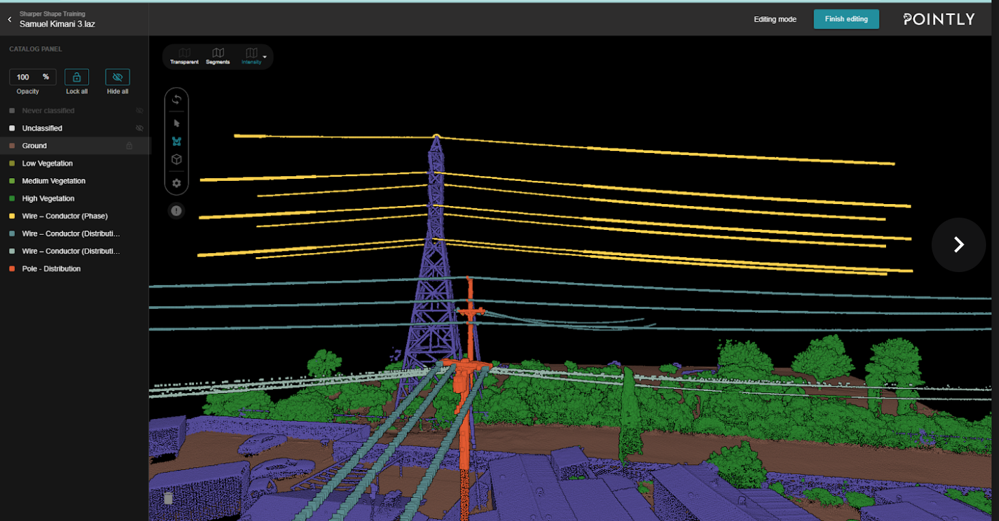
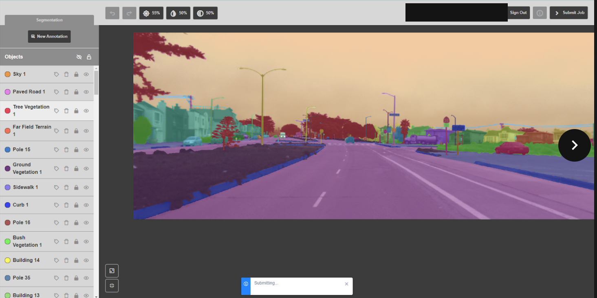
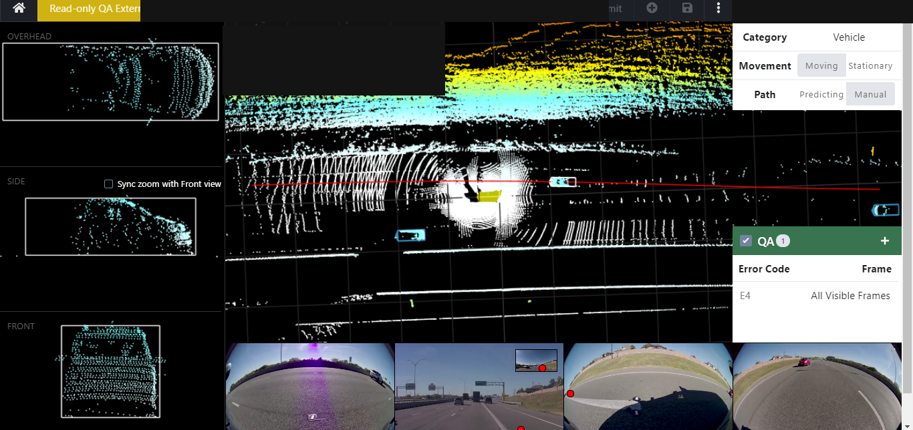
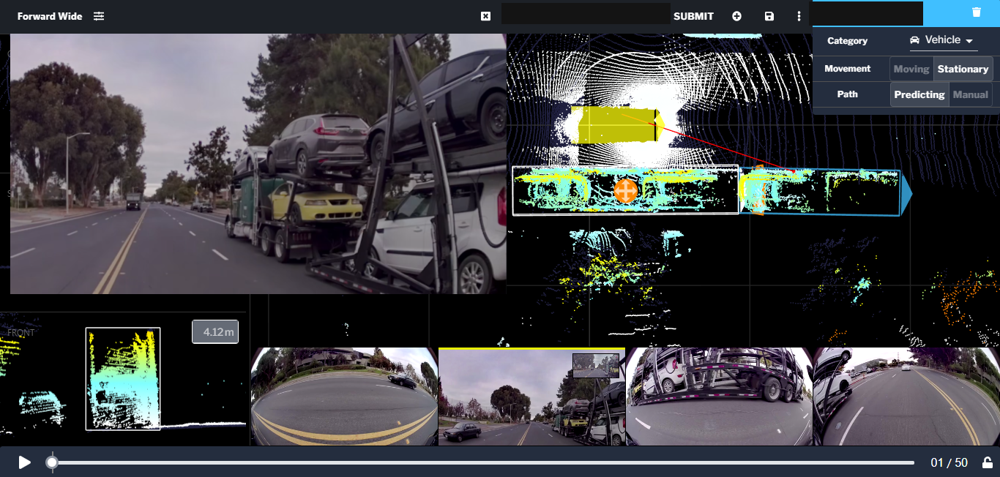
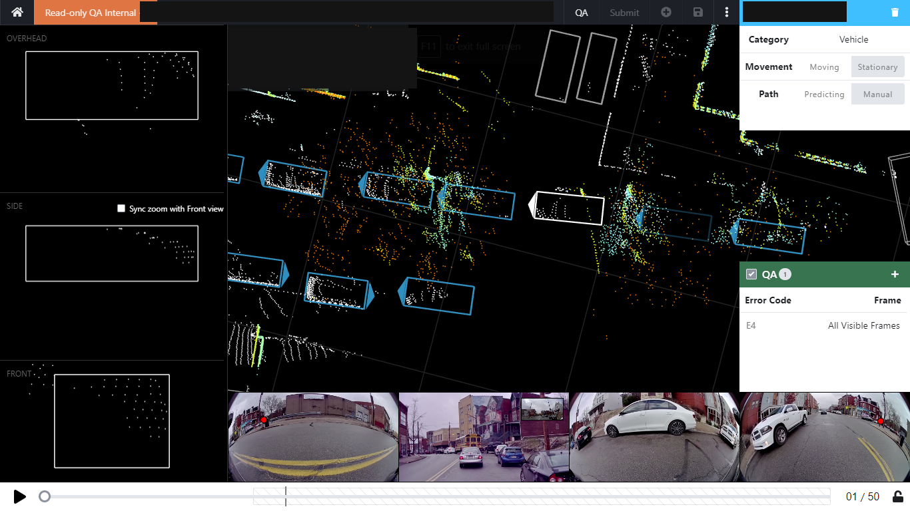
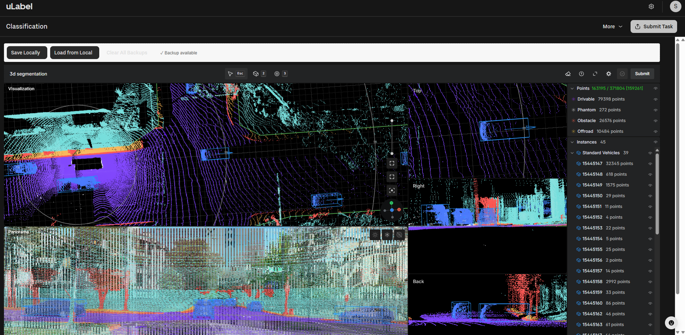

Senior QA Reviewer and AI Data Quality Specialist with 5+ years across image, video, text, and 3D LiDAR annotation — reviewing team output against guideline, correcting errors before delivery, and holding accuracy metrics on autonomous-vehicle and AI training datasets.
Reviewing annotator output against guideline, tracking accuracy metrics, and holding inter-annotator agreement (IAA) above target across high-volume datasets.
Coordinating annotation workflows across teams, tightening process steps, and hitting delivery deadlines without dropping the quality bar.
Bounding boxes, segmentation, masking, and 3D point cloud annotation for autonomous-vehicle and computer-vision training pipelines.
Evaluating LLM and video model outputs against a rubric, comparing paired responses, and writing clear rationale for each judgment.
Building annotator training content and supporting the learning-platform operations that get that training into people's hands.
Identifying error patterns, handling edge cases like occlusion and motion blur, and escalating ambiguous samples with clear rationale.
Four roles, selected for what they demonstrate about quality, scale, and process — not just a list of duties.
AV training datasets need dense, accurate 3D point cloud labeling — vehicles, road structures, and scene elements have to be segmented precisely enough for downstream perception models to trust them.
Preparing new cohorts of annotators — including refugee-camp training pilots in Uganda and Rwanda, and a Kenya cohort — to work on real AI-data projects meant building the training material, the practice environment, and the QC feedback loop, not just running the sessions.
Multiple annotation teams working on autonomous-vehicle and 3D data programs needed coordinated workflows, consistent guideline interpretation, and reliable QA reporting — without slowing delivery down.
AI training needs judged comparisons, not just labels — paired model outputs have to be evaluated against a rubric with reasoning that a training pipeline can actually use.
Screenshots from real annotation and QA work. Task IDs, batch IDs, and client project identifiers have been removed to respect NDA obligations — the annotation content itself is unaltered.

3D point cloud classified into ground, vegetation, conductor wires, and poles for utility infrastructure mapping.

Full-scene image segmentation — sky, road, sidewalk, curb, vegetation, buildings, poles — labeled by class.

LiDAR-based vehicle detection review, checking bounding box position, size, yaw, and distance-to-vehicle against source imagery.

A tracked vehicle annotated across LiDAR point cloud and synchronized camera views, with predicted vs. manual path classification.

Dense multi-vehicle scene with several tracked bounding boxes under internal QA review.

Full-scene 3D point cloud segmented into drivable, obstacle, offroad, and phantom classes with 45 tracked vehicle instances.
CVAT, Labelbox, Supervisely, Dataloop, Hasty AI, Pointly, Segments.ai, BasicAI, uLabel
Annotation review & correction, dataset evaluation, guideline compliance, error pattern detection, IAA tracking
Jira, Notion, Google Sheets, Slack
3D LiDAR point cloud annotation and QA review for autonomous-driving datasets at 95%+ accuracy.
Rubric-based evaluation of LLM and video model outputs, including edge-case handling to production-grade standards.
Owned annotator training content and the self-paced training platform, raising annotator efficiency by 30%. Held IAA above target across high-volume datasets.
Video and LiDAR annotation alongside the HITL role, running dataset QA checks and validation passes to hit delivery deadlines.
Coordinated annotation workflows across teams — 25% project completion lift, 30% consistency lift — on autonomous-vehicle and 3D data programs.
Accuracy, consistency, and guideline interpretation — held through calibration sessions, feedback loops, and IAA tracking, with errors identified and corrected before they reach delivery.
Samuel Kimani Munyua is a Senior QA Reviewer and AI Data Quality Specialist based in Nairobi, Kenya, with 5+ years conducting annotation quality checks, reviewing team output against guideline, and identifying and correcting errors across high-volume datasets.
His work spans image, video, text, and 3D LiDAR annotation — from bounding boxes and segmentation to full point cloud classification for autonomous-vehicle datasets — with a consistent focus on the review and correction layer, not just the initial label.
Beyond execution, he's built annotator training content, run training-platform operations, and coordinated regional training pilots (Kenya, Uganda, Rwanda) — work that sits at the intersection of annotation, quality, and learning operations.
Image, video, text, and 3D LiDAR annotation across 8+ tools — few candidates cover all four data types.
Five years spent primarily on review and correction, not just initial labeling — the layer that actually protects dataset quality.
Comfortable coordinating workflows and training content, and doing the hands-on annotation itself.
Active rubric-based evaluation of LLM and video model outputs — not a legacy annotation-only background.
Open to remote and contract roles in annotation QA, AI data operations, and 3D/LiDAR annotation.